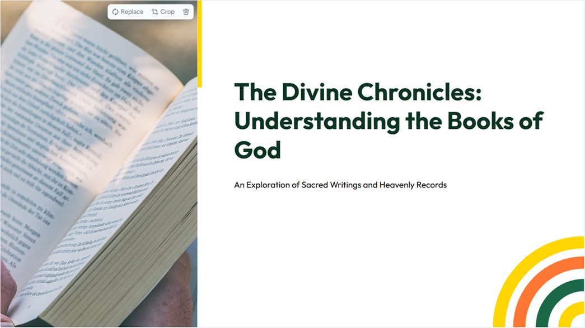
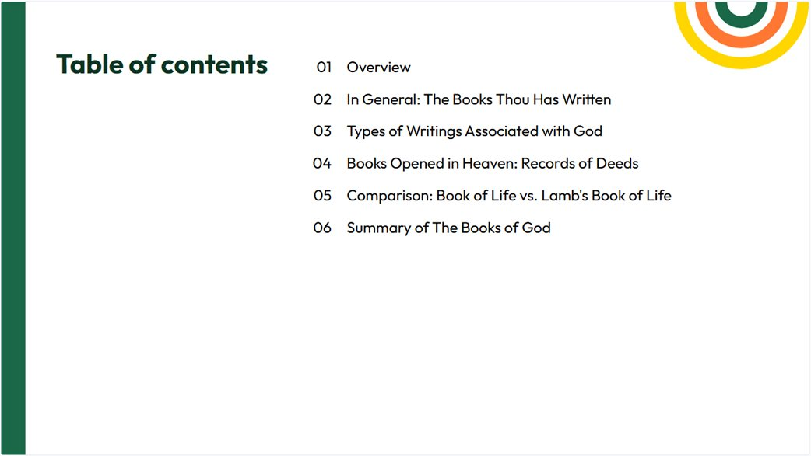
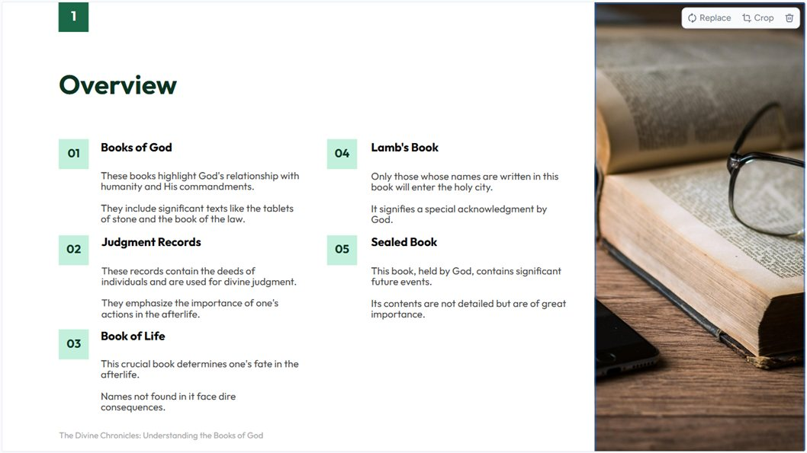
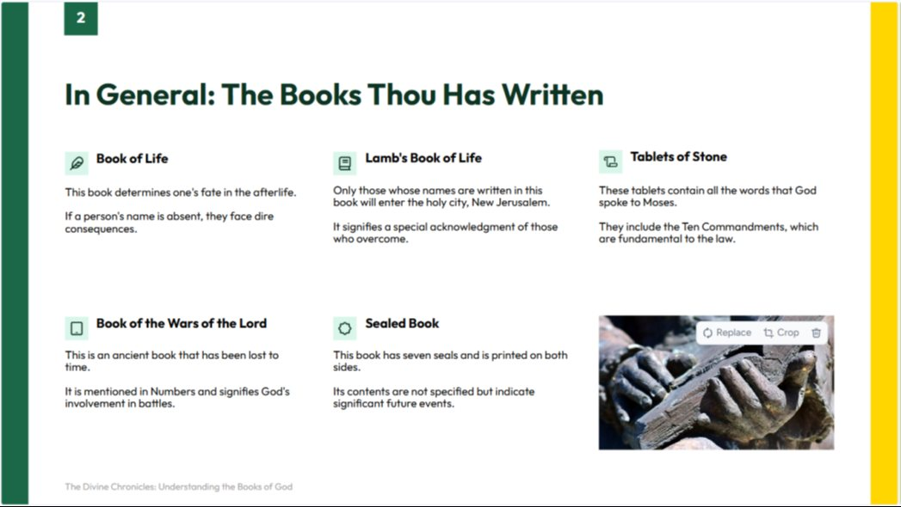
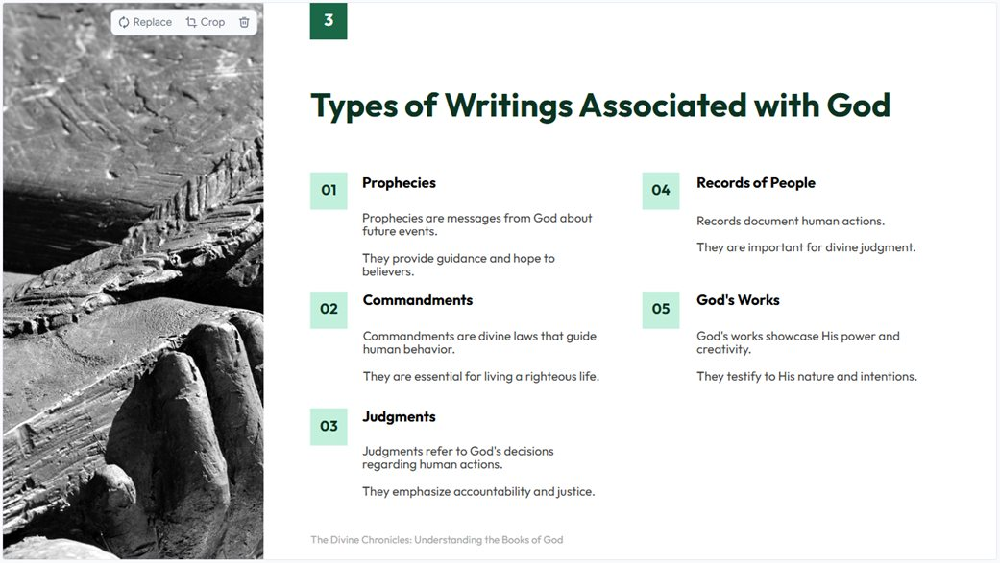
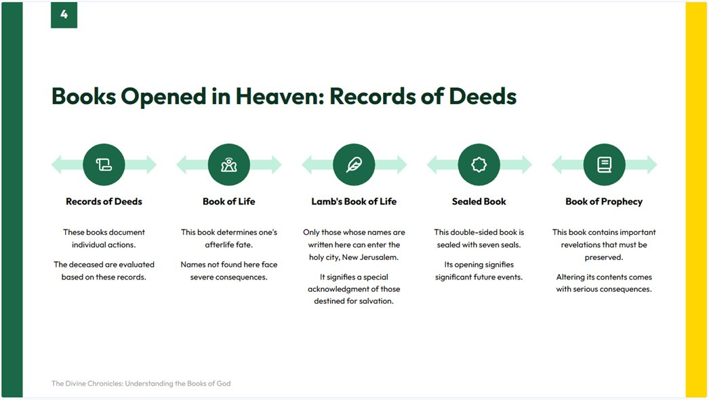
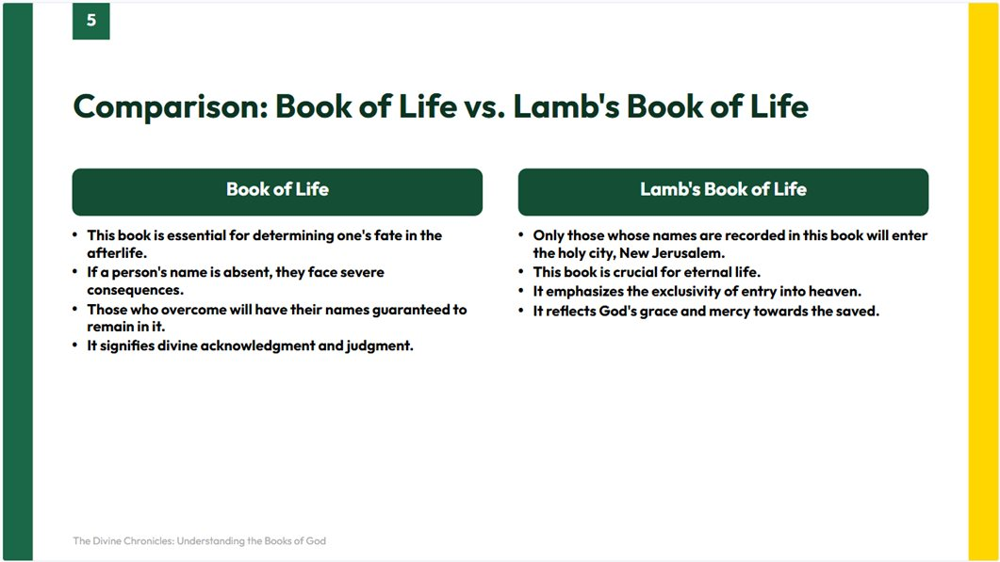
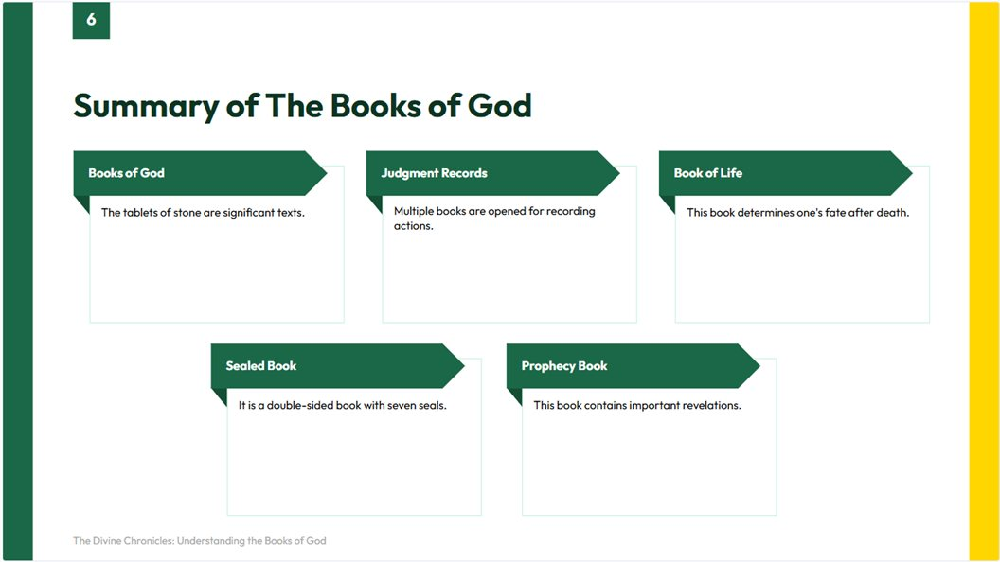

A letter to my BSF Brothers · March 29, 2025 · part of Letters to the Brothers.
I believe I mentioned a while back that I am doing some work for my son. He asked me to help him and his team spend less time making PPT presentations and do ‘real’ work. I am happy to do this. Of course I am using AI. I recall when I was at Intel, and we were building chips for Apple. It was a great time for Intel, and I think we learned a lot from the partnership. I recall one day our CEO (Andy Grove at the time) held a regular Business Unit Meeting and said something to the effect — “I want all of you engineers to learn something from Apple. They don’t spend all day making PPT presentations. They are doing more meaningful work developing their products, not their slide decks.” I could relate. I love anything computer (h/w or s/w) and I was guilty of making my presentations much snazzier than they needed to be.
So, when my son asked me for help in this, I could not help but feel a tinge of pride.
As always I continue to multi-task everything I do with AI learning. This morning, I took the study below and asked AI to make a PPT presentation of it. I thought it did very well. There are a couple slides that I have to go in and manually fix but in general I am very happy with it. The time it took was just a fraction of what it would have taken me to do it manually. Andy Grove would be proud! You can see the deck it produced — The Divine Chronicles: Understanding the Books of God — and here are the slides:








The learning about God’s books was so much fun for me. It didn’t quite change my original answer for our BSF Lesson, but it gave me a much greater awareness of what is important to God… and I sure want my name in any book He is keeping! 🙂 Unless He is keeping a book of Christians who fizzled out at the end (Heb 10:36, Matt 24:13). I don’t want my name in that book. 😕
The study behind the slides
From my letter to the Brothers earlier the same day:
Blessed Sabbath to you all! I know much (all?) of the OT Law is obeying the “letter” of it (Moral, Ceremonial and Civil). Whereas in the NT, God makes it so we can now keep the “spirit” of the law. Which makes perfect sense. The law is necessary to bring us to Christ (Gal 3:24) but it was just a shadow of what was to come. Even if somehow we could keep the “letter” of the law, all of it, would we not look more like Pharisees than Jesus? However, one of my favorite chapters in the Bible is Isaiah 58 (Ezekiel 16 and 34 are my other 2 favorites) — where God, almost in a state of frustration, appeals to His people to see beyond the “letter” of the law. It gives me the same vibe that I get when Jesus says, “you’ve heard it said… but I say to you…” Here is what God intended to take place in your heart (Isaiah 58:13–14).
For this week’s Lesson the question that kept bouncing around my head was: what are the books that will be opened along with the Book of Life? I think I gave a pretty good answer but there was a nagging in my spirit that there is much more. I resisted the temptation to look ahead into the BSF Notes. But I believe using a Concordance (or the reference verses in the margins of our Bibles) is a good thing. It doesn’t take away from the work of the Holy Spirit and it is not a way to be ‘lazy’ and get a better answer. It is just a tool to save time. Now that we have AI, I know it is just a glorified search engine where I can control what the sources are and make it simply an interactive Concordance. I just did that:
- I submitted the text of Genesis–Job (Project Gutenberg) — broken up because NotebookLM has a 500,000-word limit
- Then Psalms–Malachi (Project Gutenberg)
- Then Matthew–Revelation (Project Gutenberg)
Then I asked: “What information is written in God’s book or books?” I could have asked it to show me every verse with the word “book” in it, but that would have left me a lot of sorting to do. Constrained to Scripture alone, here is the shape of what it found:
- The book God has written. After the golden calf, Moses prays “strike me out of the book that thou hast written,” and God answers, “he that hath sinned against me, him will I strike out of my book” (Exodus 32).
- Books since lost. The Book of the Wars of the Lord (Numbers 21) and the Book of the Just (Joshua 10) — ancient books quoted in Scripture but lost to history.
- The tablets and the book of the law. Two tables of stone written with the finger of God, and the book of the law placed beside the ark “for a testimony” (Deuteronomy) — found again in the temple in Josiah’s day, igniting reform (2 Kings 22–23).
- The book of remembrance. “A book of remembrance was written before him for them that fear the LORD, and think on his name” (Malachi 3:16).
- The books of judgment and the Book of Life. At the great white throne, “books were opened… and the dead were judged out of the things written in the books, according to their works” — and another book was opened, which is the Book of Life; anyone not found in it was cast into the lake of fire (Revelation 20:12–15). Only those written in the Lamb’s Book of Life enter the New Jerusalem (Revelation 21:27).
- The sealed book and the book of prophecy. The scroll written within and without, sealed with seven seals, that only the Lamb can open (Revelation 5) — and Revelation itself, “the book of this prophecy,” to which nothing may be added and from which nothing taken away (Revelation 22:18–19).
Believers should rejoice, above all, that our “names are written in heaven” (Luke 10:20). — Erv
Comments